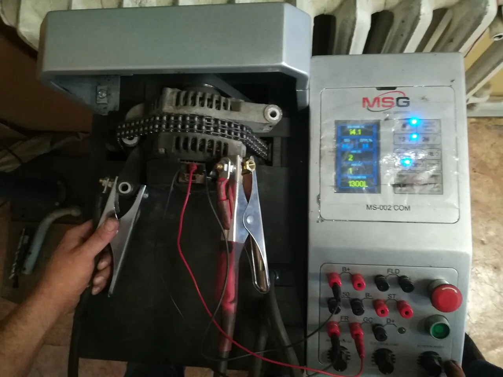
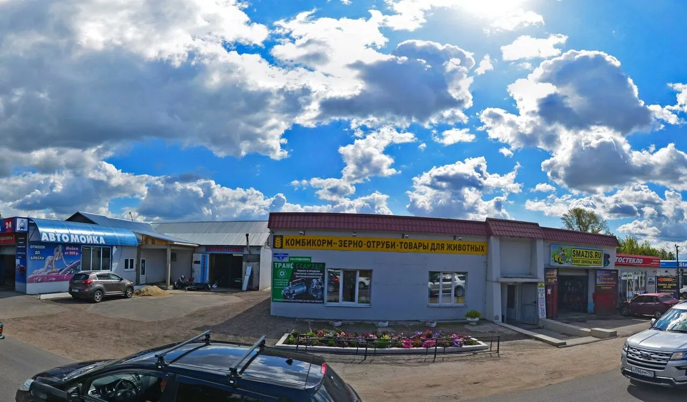

«Была проблема с пропадающей зарядкой. Отремонтировали быстро, четко, по приятной цене!»
Олег, Honda Civic
с чем едут
Щёлк – и тишина? Лампа аккумулятора горит на ходу? Это к нам
«Позвонил и сказал что генератор рабочий и всё с ним хорошо, что на стенде он проверил, посоветовал почистить контакты.»
Opel Vectra B – дело было в контактах«обращался с переборкой стартера на грузовой автомобиль, думал загнут денег за ремонт. Но оказалось нет.»
Николай«ехал из Рязанской обл в Москву» – починили по дороге.
Раис
ремонт, а не замена
Из двух мёртвых генераторов – один живой
«Собрал из двух неработающих генераторов один работающий за символические деньги!» – так бывает, когда мастер не меняет агрегат целиком, а ищет, что в нём сломалось.
- Меняют только нужное. «Вместе подумали и решили поменять те детали генератора , которые, аргументированно, надо было»
- Не берутся за безнадёжное. Если ремонт не поможет, скажут честно и помогут с новым агрегатом – как было с генератором Toyota у Дениса.
сколько ждать
Многие уезжают в тот же день
Так пишут клиенты. Срок зависит от поломки и от того, есть ли запчасть: уточните по телефону.
- 40мингенератор Chevrolet Cruze, с проверкой на стенде
- 1часпереборка генератора Kia Ceed, февраль 2026
- 2часастартер Volkswagen Passat: привёз в 10, забрал отремонтированным

как проходит
Стенд не врёт
- Позвоните или напишите. Расскажите, что за машина и что случилось: работают по предварительной записи.
- Привезите агрегат. Чаще всего его привозят уже снятым. Если снять некому – спросите по телефону, клиенты пишут, что сервис по демонтажу рядом.
- Проверка на стенде. Мастер находит неисправность и говорит, что менять. Исправное не трогают.
- Ремонт и повторная проверка. Запчасти к большинству агрегатов в наличии, остальное привозят.
цены
Нормочас – от 300 до 2000 ₽
Так указано в карточке на Яндекс Картах. Точная цена ремонта зависит от агрегата и запчастей: {{цены на ремонт стартера и генератора}}.
Узнать цену по телефонуЧьи машины
Отечественные, европейские, японские, корейские, китайские. Легковые, грузовые, коммерческие и спецтехника.
Запчасти
При мастерской магазин автозапчастей: доставка и самовывоз.
Гарантия
{{условия гарантии}}
Удобства
Оплата картой, парковка, Wi-Fi.
словарик
Чтобы понимать мастера с полуслова
- Бенди́кс
- Шестерня стартера. Выдвигается, цепляет венец маховика и прокручивает двигатель. Наверху её можно увидеть в деле.
- Втягивающее реле
- Цилиндр сверху на стартере. Толкает бендикс и подаёт ток. Тот самый «щёлк».
- Щётки и подшипники
- Изнашиваются первыми. Их меняют, и агрегат служит дальше.
- Диодный мост
- Деталь генератора, которая превращает переменный ток в постоянный для аккумулятора.
отзывы
Что говорят о нас наши клиенты
5,0114 оценок и 55 отзывов на Яндекс Картах
Обращался 17.04.23. С генератором от опель вектры б, хоть и проверял перед сдачей но после приёма "Кирил" Позвонил и сказал что генератор рабочий и всё с ним хорошо, что на стенде он проверил, посоветовал почистить контакты. После чистки и установки обратно на место загорелась индикация АКБ на приборке а после того как запустил пошла зарядка сдохшего АКБ. Так как машина перед стоянкой налетел на снежный сугроб стояла всю зиму и контакты оказывается окислились это и была причиной. За проверку и диагностику отдал 300р. Спасибо за отзывчивость и добросовестность. В других сервисах бы возможно и развели но тут без этого, и подшипники и щётки тоже в хорошем состоянии оказались.
Отличный мастер, подходит к ремонту со знанием дела, удивилась, что у стартера и генератора можно поменять детали, почистить и все отлично ходит. Очень рекомендую, лучше сейчас свои оригинальные части машины чинить, чем менять на новые.
Не первый раз обращаюсь. Перебрали генератор киа сид, по времени час, по рублями 6.5 ( февраль 2026). Цена - качество - время-идеально
Отличное место, обращался с переборкой стартера на грузовой автомобиль, думал загнут денег за ремонт. Но оказалось нет. Грамотный мастер не только перебрал мне его, но и еще многое что интересное подсказал. Рекомендую, цена качество на высоте.
Отличное место для ремонта стартеров и генераторов. Починил генератор на Шевроле Круз за 40 минут и проверил его на стенде.Все работает отлично 👍. Запчасти все в наличии. Спасибо большое . Заезжайте на ремонт.Здесь вас не обманут и выполнят качественную работу . Так держать 🤝
Обратился с ремонтом генератора тойота. Генератор ремонту не подлежал. В кратчайшие сроки заказали новый, так как я был проездом в Коломне. Спасибо за решение проблемы.
Обслуживание на высоте - всё показали, рассказали, объяснили. Качество работы на 5. Даже бесплатно заменили втягивающую т.к была в наличие от подобного стартера. Сделали всё быстро, в течении нескольких часов - видимо мастер был более-менее свободен. Запчасти для моего стартера были в наличие, что очень порадовало. Планирую отдать генератор на диагностику и замену подшипников.
Вместе подумали и решили поменять те детали генератора , которые, аргументированно, надо было, а те , которые с завода-производителя ещё походят, оставили, рекомендую, как грамотного специалиста.
Большое спасибо, сегодня был на Honda civic 4d. Была проблема с пропадающей зарядкой. Отремонтировали быстро, четко, по приятной цене! Генератор проверили на стенде, потом установили на автомобиль , без каких либо замечаний. Советую!
Доволен качеством работы. Всё быстро, запчасти всегда по наличию. В 10 привез стартер от пассата через 2 часа забрал отремонтированый.
Отличный специалист! Собрал из двух неработающих генераторов один работающий за символические деньги!
Я не первый раз обращаюсь к Кириллу за ремонтом стартера и генератора всё прекрасно. Чем другие места где ссылаются что якобы не могут найти причину поломки. Советую.
Приехал с нерабочим генератором, подождал 2 часика и уехал на отремонтированном ещё лучше чем на новом, Рекомендую, цена приемлемая, запчасти всё есть и сервис по демонтажу рядом.
адрес
Станкостроителей, 5
+7 (925) 459-10-50- ЧасыПн–Пт 9:00–18:00, Сб 10:00–14:00, Вс выходной
- АдресКоломна, проезд Станкостроителей, 5
- Написать
- ЗаписьПредварительная, по телефону

Открыть на Яндекс КартахМаршрут до проезда Станкостроителей, 5